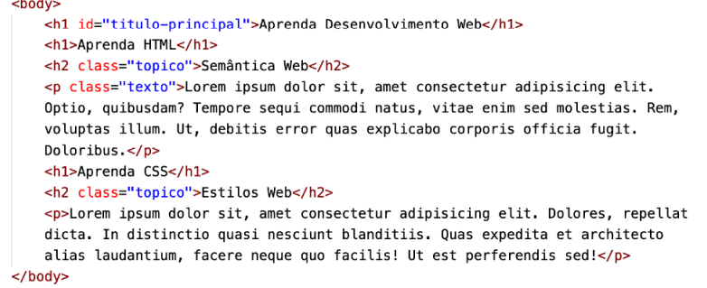

Para começar a dar mais poder às CSS, criando estilos personalizados, precisamos aprender a utilizar os seletores de id (#) e de class (.) de maneira eficiente. Ao criar nosso conteúdo em HTML, podemos identificar um determinado elemento único com um id, ou agrupar elementos múltiplos que tenham características semelhantes com um class. Vamos olhar um exemplo simples de documento HTML, com propriedades identificadoras:

Olhando atentamente para a linha 23, vimos que o h1 principal se diferencia dos demais que estão nas linhas 24 e 27, pois ele possui um id. Agora foque sua atenção nas linhas 25 e 28 e perceba que os dois títulos h2 possuem o mesmo class. Um id vai identificar um elemento único dentro da página atual. Essa identificação vai nos permitir criar um estilo especial para um elemento isolado. Já um class vai identificar uma classe à qual um ou mais elementos pertençam, compartilhando características em comum a todos os que façam parte desse grupo.
SE LIGA NA REGRA: Em um mesmo documento HTML, só podemos usar um id para um único elemento, o que significa que não podemos ter dois elementos com um mesmo id dentro de uma mesma página. Porém, podemos atribuir um mesmo class para vários elementos que possuam essa mesma característica
MAIS UMA REGRA: Todo id em HTML é identificado nas CSS por um símbolo #. Toda class em HTML é identificada nas CSS por um ponto
No Capítulo 12, discutimos três técnicas usadas para aplicar estilos aos nossos documentos HTML: inline, local e externa. Durante os nossos vídeos de acompanhamento do material em PDF, demonstramos que as três técnicas podem ser usadas em conjunto, e os estilos de cada serão combinados nessa ordem:
1º lugar: CSS externo
2º lugar: CSS interno/local
3º lugar: CSS inline
Sendo assim, caso haja duplicidade nas configurações, o que fica valendo no final é a propriedade especificada nas configurações inline. Cada camada de aplicação de estilos vai adicionando propriedades novas e sobrescrevendo as configurações do nível anterior. Quando nós aplicamos configurações personalizadas de id ou de class, também vai existir uma combinação de configurações, como você já deve ter percebido ao analisar o exemplo que apresentamos nas páginas anteriores.